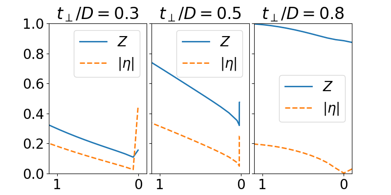

Disolution of order parameter¶
# Created Tue Apr 25 10:31:35 2017
# Author: Óscar Nájera
from __future__ import division, absolute_import, print_function
import numpy as np
import matplotlib.pyplot as plt
import dmft.common as gf
import dmft.ipt_imag as ipt
import dmft.dimer as dimer
BETA = 756.
plt.rcParams['font.size'] = 20
plt.rcParams['axes.labelsize'] = 'medium'
plt.rcParams['figure.autolayout'] = False
def zero_f_meas(giw_d, giw_o, murange, tp, u_cut):
sd_zew, so_zew = [], []
for u_int in murange:
giw_d, giw_o, _ = dimer.ipt_dmft_loop(
BETA, u_int, tp, giw_d, giw_o, tau, w_n, 1e-3)
g0iw_d, g0iw_o = dimer.self_consistency(
1j * w_n, 1j * giw_d.imag, giw_o.real, 0., TP, 0.25)
siw_d, siw_o = ipt.dimer_sigma(u_int, tp, g0iw_d, g0iw_o, tau, w_n)
sd_zew.append(np.polyfit(w_n[:2], siw_d[:2].imag, 1))
so_zew.append(np.polyfit(w_n[:2], siw_o[:2].real, 1))
sd_zew, so_zew = np.array(sd_zew), np.array(so_zew)
dw_sig11 = np.ma.masked_array(sd_zew[:, 0], murange >= u_cut)
zet = 1 / (1 - dw_sig11.T)
tpp = (TP + so_zew[:, 1].T)
return zet, tpp
tau, w_n = gf.tau_wn_setup(dict(BETA=BETA, N_MATSUBARA=2**12))
# TP 0.3
TP = 0.3
giw_d, giw_o = dimer.gf_met(w_n, 0., TP, 0.5, 0.)
murange03 = np.array(sorted(list(np.arange(2.3, 3.46, .1)) +
[3.46, 3.47]))
zet03, tpp03 = zero_f_meas(giw_d, giw_o, murange03, TP, 3.47)
plt.plot(murange03, zet03, '-', lw=2, label=r'$Z$')
plt.show()
# TP 0.5
TP = 0.5
murange05 = np.array(sorted(list(np.arange(1.2, 2.35, .1)) +
list(np.arange(2.327, 2.33, 0.00051))))
zet05, tpp05 = zero_f_meas(giw_d, giw_o, murange05, TP, 3.47)
plt.plot(murange05, zet05, '-', lw=2, label=r'$Z$')
plt.plot(murange05, np.abs(zet05 * (1 - tpp05)), '*-',
lw=2, label=r'$|\eta|$')
plt.show()
# TP 0.8
TP = 0.8
giw_d, giw_o = dimer.gf_met(w_n, 0., TP, 0.5, 0.)
murange08 = np.arange(0.1, 2.5, 0.1)
zet08, tpp08 = zero_f_meas(giw_d, giw_o, murange08, TP, 8)
plt.close('all')
f, (ax3, ax5, ax8) = plt.subplots(
1, 3, sharey=True, sharex=True, figsize=(8, 4))
ax3.plot(3.465 - murange03, zet03, '-', lw=2, label=r'$Z$')
ax3.plot(3.465 - murange03, np.abs(zet03 * (1 - tpp03)), '--',
lw=2, label=r'$|\eta|$')
ax3.legend(loc=0)
ax3.invert_xaxis()
ax3.set_xlabel(r'$(U_{c_2}-U)/D$')
ax5.plot(2.35 - murange05[:-1], zet05[:-1], '-', lw=2, label=r'$Z$')
ax5.plot(2.35 - murange05[:-1], np.abs(zet05 *
(1 - tpp05))[:-1], '--', lw=2, label=r'$|\eta|$')
ax5.legend(loc=0)
ax5.invert_xaxis()
ax5.set_xlabel(r'$(U_{c_2}-U)/D$')
ax8.plot(1.3 - murange08, zet08, '-', lw=2, label=r'$Z$')
ax8.plot(1.3 - murange08, np.abs((1 - tpp08) * zet08), '--',
lw=2, label=r'$|\eta|$')
ax8.legend(loc=0)
ax8.invert_xaxis()
ax8.set_xlim(1.1, -0.1)
ax8.set_xlabel(r'$(U_c-U)/D$')
ax8.set_ylim(0., 1.)
for ax, tp in zip((ax3, ax5, ax8), [0.3, 0.5, 0.8]):
ax.set_title(r'$t_\perp/D={}$'.format(tp))
plt.subplots_adjust(wspace=0.05)
plt.savefig('IPT_transition_Uc2.pdf')
plt.show()
Total running time of the script: ( 0 minutes 48.185 seconds)